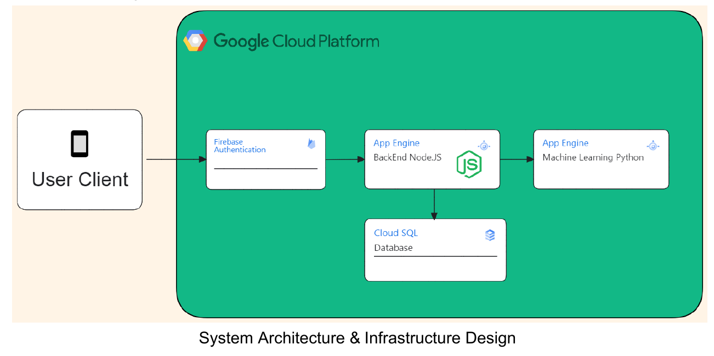

UI Showcase
-

Backend Architecture

Lifebeam is a mobile application designed to track daily exercise activities and calorie intake while predicting the long-term health impact of a user's lifestyle, including the likelihood of achieving a healthy weight, becoming underweight, or becoming overweight. The application utilizes artificial intelligence and machine learning models trained on multiple datasets to deliver accurate and reliable predictions.
This project was developed as a group capstone project for the Bangkit Academy program. As a participant in the Cloud Computing learning path, I collaborated with another Cloud Computing cohort to build the backend infrastructure responsible for authentication and authorization services, as well as integration between the machine learning model deployed on Google Cloud and the user-facing mobile application.